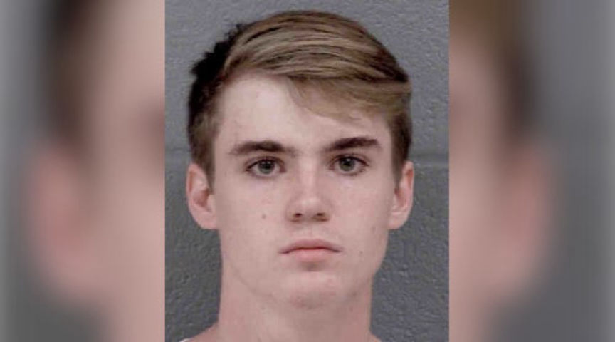
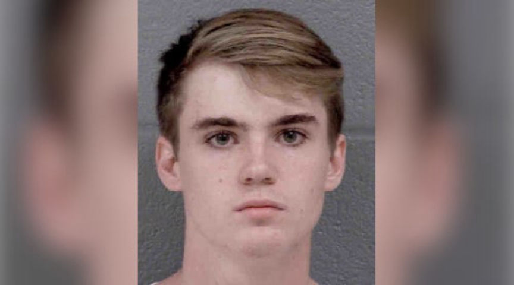

Teen Arrested for Buying LSD on Empire Market
A federal grand jury in Charlotte, North Carolina, returned an indictment against a 19-year-old for ordering drugs from vendors on Empire Market and reselling them to local customers as well as to other members of his alleged drug trafficking organization.
In August 2019, U.S. Customs and Border Protection intercepted a package addressed to Anthony Byrnes in Huntersville, North Carolina. Customs suspected the package contained LSD, according to the criminal complaint. The Huntersville Police Department (HPD) took possession of the package for further investigation. On August 7, 2019, law enforcement conducted a controlled delivery of the package. After investigators had observed Byrnes carry the package into his house, they executed a search warrant at the address.

During execution of the search warrant, authorities found MDMA, codeine syrup, marijuana, THC Wax, LSD, approximately $10,000, a Glock 19, and a Taurus G2C. Byrnes had the drugs, guns, and cash stored in his bedroom as well as in a safe in his bedroom. Byrnes provided authorities with the combination to the safe. They then arrested the 19-year-old and Mirandized him. The interview went well for law enforcement; Byrnes told them that he had been purchasing narcotics from vendors on Empire Market. He admitted using Bitcoin for purchases on the market as well as using Snapchat to discuss the drug trafficking operation with his co-conspirators.
Per the criminal complaint:
Throughout these conspiracies, Byrnes visited multiple Bitcoin ATMs in Charlotte, NC and made numerous transactions on behalf of the DTO, ranging between $2,000 (USD) to $9,000 (USD) per transaction. Byrnes also admitted using the “Snapchat” phone application to communicate with co-conspirators. The Snapchat phone application was located on his cell phone. Law enforcement determined this cellphone was used to facilitate drug trafficking and money laundering activity. Law enforcement submitted the seized narcotics for further lab examination. Lab results revealed approximately 11.90 grams of D-Lysergic Acid Diethylamide (LSD), a Schedule I controlled substance, among other controlled substances, were seized within Byrnes’ bedroom. Law enforcement investigation also revealed the aforementioned Glock 19 handgun, and Taurus G2C handgun were possessed in furtherance of this drug trafficking activity. Law enforcement’s investigation revealed that Byrnes trafficked the aforementioned narcotics, with firearms, from his residence.
Byrnes is currently in federal custody facing drug trafficking conspiracy; possession with intent to distribute LSD; possession with intent to distribute Psilocin; possession with intent to distribute DMT; possession with intent to distribute marijuana; and two counts of possession of a firearm in furtherance of a drug trafficking crime. Two of the charges carry mandatory minimum sentences of ten years in prison and the firearm charges carry mandatory minimum sentences of five years in prison.
Criminal Complaint: pdf, html
In August 2019, U.S. Customs and Border Protection intercepted a package addressed to Anthony Byrnes in Huntersville, North Carolina. Customs suspected the package contained LSD, according to the criminal complaint. The Huntersville Police Department (HPD) took possession of the package for further investigation. On August 7, 2019, law enforcement conducted a controlled delivery of the package. After investigators had observed Byrnes carry the package into his house, they executed a search warrant at the address.

Anthony Byrnes
During execution of the search warrant, authorities found MDMA, codeine syrup, marijuana, THC Wax, LSD, approximately $10,000, a Glock 19, and a Taurus G2C. Byrnes had the drugs, guns, and cash stored in his bedroom as well as in a safe in his bedroom. Byrnes provided authorities with the combination to the safe. They then arrested the 19-year-old and Mirandized him. The interview went well for law enforcement; Byrnes told them that he had been purchasing narcotics from vendors on Empire Market. He admitted using Bitcoin for purchases on the market as well as using Snapchat to discuss the drug trafficking operation with his co-conspirators.
Per the criminal complaint:
Throughout these conspiracies, Byrnes visited multiple Bitcoin ATMs in Charlotte, NC and made numerous transactions on behalf of the DTO, ranging between $2,000 (USD) to $9,000 (USD) per transaction. Byrnes also admitted using the “Snapchat” phone application to communicate with co-conspirators. The Snapchat phone application was located on his cell phone. Law enforcement determined this cellphone was used to facilitate drug trafficking and money laundering activity. Law enforcement submitted the seized narcotics for further lab examination. Lab results revealed approximately 11.90 grams of D-Lysergic Acid Diethylamide (LSD), a Schedule I controlled substance, among other controlled substances, were seized within Byrnes’ bedroom. Law enforcement investigation also revealed the aforementioned Glock 19 handgun, and Taurus G2C handgun were possessed in furtherance of this drug trafficking activity. Law enforcement’s investigation revealed that Byrnes trafficked the aforementioned narcotics, with firearms, from his residence.
Byrnes allegedly had drugs, guns, and cash in his room
Byrnes is currently in federal custody facing drug trafficking conspiracy; possession with intent to distribute LSD; possession with intent to distribute Psilocin; possession with intent to distribute DMT; possession with intent to distribute marijuana; and two counts of possession of a firearm in furtherance of a drug trafficking crime. Two of the charges carry mandatory minimum sentences of ten years in prison and the firearm charges carry mandatory minimum sentences of five years in prison.
Criminal Complaint: pdf, html